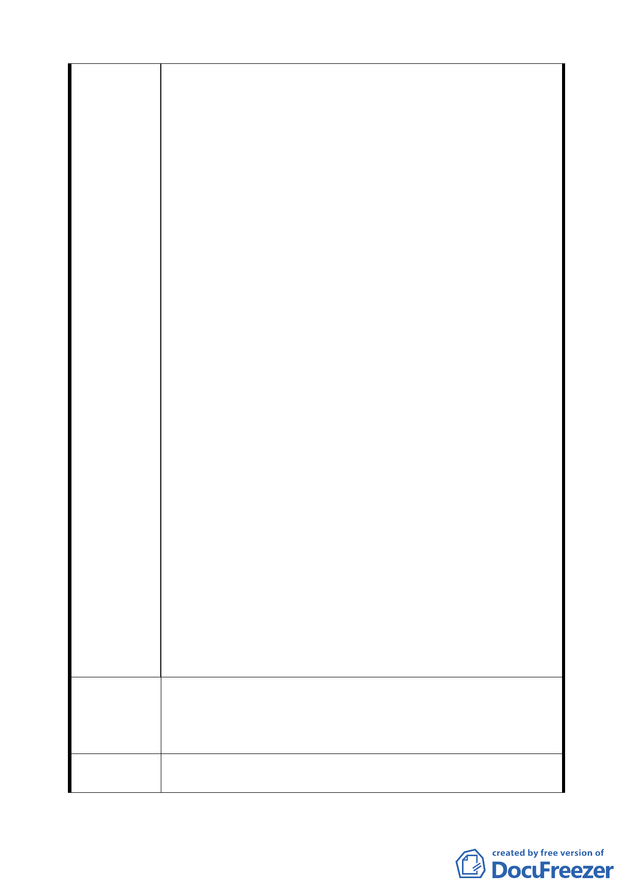

政署確有占有 120 地號等 6 筆土地之全部土地之事實。
二、依據申請人等親自前往警察公墓探勘結果，公墓環山道
路北側附近即為 120 地號等 6 筆土地座落處。環視 120
地號等 6 筆土地，信步可見內政部警政署所設之駁崁，
且多半 蔓延至山坡林地之中，深不見底。其他少數未被
駁崁覆蓋之區域，亦設有水溝、小徑以及具水土保持目
的之綠色塑膠網。而於多處駁崁上，內政部警政署尚有
設置小型鐵梯， 供相關人員深入 120 地號等 6 筆土地甚
至於進入 120 地號等 6 筆土地明顯之處，設立多處「非
經核定，禁止埋存、移葬、撿骨、整建」標示牌。由於
120 地號等 6 筆土地設置有駁崁、綠色塑膠網、小型鐵梯
及標示牌等多項設置物，足證內政部警政署對於 120 地
號等 6 筆土地已具有主觀上之管領意思，以及客觀上實
際管理、支配及使用之事實。
三、按殯葬管理條例第 6 條第 2 項規定「私立公墓之設置或
擴充， 由直轄市、縣(市)主管機關視其設施內容及性質，
定其最小面積。但山坡地設置私立公墓，其面積不小於
五公頃。」、第 12 條第 3 項規定「公墓周圍應以圍牆、
花木、其他設施或方式，與公墓以外地區作適當之區
隔。」，及第 17 條第 2 項、第 3 項規定「公墓內應劃定
公共綠化空地，綠化空地面積占公墓總面積比例，不得
小於十分之三。公墓內墳墓造型採平面草皮式者，其比
例不得小於十分之二。」、「於山坡地設置之公墓，應
有前項規定面積二倍以上之綠化空地」。
四、按申請人等與中華民國所有共有之 120 地號等 6 筆土地，
確未經申請人等同意，但已被內政部警政署實際管理支
配使用之事實，為避免「變更台北市內湖區成功路與金
龍路口北側部份公園用地及住宅區為公墓用地主要計畫
案」內計畫範圍之土地面積、地號與實際狀況不一而衍
生疑義， 謹依公告事項三規定，提出書面意見，作為審
議本案的參考。敬請准予就主揭 120 地號等 6 筆土地全
併入上開計畫案內以符現況都市計畫土地利用實情。
請准就台北市內湖區康寧段 2 小段 l20、120-2、l20-3、20l、
建議辦法
20l-1、201-2 地號等 6 筆土地全併入「變更台北市內湖區成
功路與金龍路口北側部份公園用地及住宅區為公墓用地主要
計畫案」內，以符現況都市計畫土地利用實情 , 敬請核准。
委員會決議
除 120-3 號土地維持為道路用地外，其餘陳情之地同意併入計
畫案內以符現況都市計畫使用實情。
一五